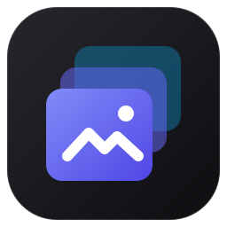

Local history
Your last ~30 captures are kept on disk. No account, no cloud, no upload.

KeepShotA lightweight, open source screenshot tool for Windows and Linux. Select, annotate, copy — and reopen any recent capture later with its annotations still editable.
Press PrtSc to capture · Ctrl+PrtSc for history


Your last ~30 captures are kept on disk. No account, no cloud, no upload.
Reopen a capture from history and keep editing its arrows, text and shapes.
One overlay across every display, including negative coordinates.
Straight and curved arrows, shapes, text, a real marker highlighter, blur and numbered steps.
The overlay is ready before you finish pressing the hotkey. Tiny installer.
Signed updates from GitHub Releases, one click from the tray.
See all releases on GitHub.